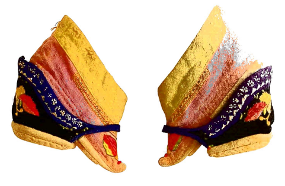

How Foot Binding Affected Lives in Premodern China
Preface
This project explores how craft culture and social status complicate simplified narratives
about foot binding. Prior to this course, I had an extraordinarily limited understanding of footbinding as a practice.
My limited exposure to the topic was through passing mentions in history classes and the occasional mention in popular culture, demonstrating almost exlusively the negatively aspects of the pratice.
However, as we progressed through this course, it became apparent to me that this didn't necesasrily capture the complexity of the practice as a whole.
Women did, or at least it was believed at the time, stand to gain something.
While the agency afforded to these women by the craft culture surronding the pratice and potentially the improved self image of conforming to the beauty standards of the time were deemed beneficial, the ultimate goal of having one's feet bound
was the opportunity to marry upwards socioeconomically.
With this project, I hope to provide much needed context to uninformed readers, who, like myself previously, do not know the full story when it comes to foot binding. By providing this information and analysis,
I hope to provide the reader with the necessary information to come to their own conclusions regarding foot binding and the opporunity to better understand cultures they may not have been sufficiently exposed to.
Guiding Question
How did the craft culture and social value associated with bound feet complicate the
narrative of victimization in pre-modern China?
Prevailing Narratives
Most narratives often frame foot binding as exclusively oppressive or beneficial, ignoring the complexity of the situation at hand.
The following are summaries of each camp's position.
Coercion and Harm
The seemingly more common narrative, at least in the West, is that of the strict enforcement and violent nature of foot binding.
In her 2001 book Every Step a Lotus, Kuo explores a more nuanced narrative around the origins of foot binding, but doesn't shy away from the harsh realities of the practice.
Needless to say, the process was incredibly painful and largely stunted the mobility of affected women. This would have even further reduced the agency of these women, in a time where very little was
afforded to them in the first place.
Additionally, Brown quashes the narrative of upward mobility, at least in the later years of footbinding being practice, in her paper "Marriage Mobility and Footbinding in Pre-1949 Rural China".
This study indicates, that, especially after 1924, foot binding didn't actually afford bound women any more socioeconomic mobility then their unbound peers. This means that the 60-70% of bound women
whom married within their class or downwardly were likely still made to do the same tasks as before, but now with severly reduced mobility and incredible pain.
Sichuan marriage mobility outcomes by binding status and period
Group
Period
N
Upward Mobility
No Mobility
Downward Mobility
Women Bound at Marriage
1907–24
196
40%
43%
17%
Women Bound at Marriage
1925–36
591
32%
48%
20%
Women Bound at Marriage
1937–49
207
35%
44%
21%
Women Not Bound at Marriage
1907–24
77
29%
62% (+)*
9% (-)**
Women Not Bound at Marriage
1925–36
1002
31%
47%
22%
Women Not Bound at Marriage
1937–49
1200
30%
46%
24%
Agency and Mobility
In his 1994 paper "Foot-binding in Neo-Confucian China and the Appropriation of Female Labor", Blake argues that despite the
harmful nature of foot binding as a practice, it provided women agency when they otherwise would have been afforded none.
By voluntarily enforcing this practice inter-generationally, mothers sought to provide virtue through discipline and provide their daughters the ground work for a better life.
Unfortunately, there was also a distinctly socio-economic rationale for foot binding. By binding their feet, young women were alledgly able to marry men that held higher status than their family.
While foot binding was unfathomably painful, many found the trade off worth it in order to live a better life, and the oportunity to provide a better life for their children.
On Foot Binding

The above image is a set particularly well cared for lotus shoes, likely crafted between the late 19th and early 20th century.
Just from looking at them, it becomes aparent that the creation of these shoes extended beyond the practical or even the aesthetic, but fulfilled some desire for creative expression.
Bound women were given the opportunity to embroider their shoes with whatever paterns or imagery they so desire, conveying the messages they desired to share but were never afforded the opportunity to.
Generally, the process of foot binding was best started between the ages of five and seven. This process, especially at this age, was excrutiating for the girls. Despite this, however, they were afforded
very limited pity by their family members. Since the process and pain was deemed necessary and important for the girl's development, they, even at this young age,
were expected to endure it with a sense of stoicism and self-discipline.
.
While the origin of foot binding seems to orginate from women of great beauty in the distant past, the reason for the pratice has evolved alongside Chinese society over over 1000 years.
Initially, the purpose was likely that of containment and seperation. When physically immobilized, women would be unable to intrude on the important matters of the man of the hosue, work in a unfittingly
masculine profession, or even leave should they feel the need to do so. However, over time, it's utility transformed from the physical to the psychological. The suffering and beauty afforded to bound women
came to be one of the purest expressions of Neo-Confucian thought. Beyond the physical , foot binding became an incredibly desireable trait for women purely from the behavioral and philosphical implications.
.
Social Status
This section is reserved for the social and economic stakes of the practice, including class,
marriage, and regional variation.
Class Mobility
As aforementioned, one of the major motivating factors for young women to undergo foot binding was the opportunity to marry up.
In theory, women from middle and lower class families could be afforded the opportunity to marry government officials or similarly important men. Needless to say, this opportunity was highly sought after.
Being able to permanently remove yourself and potentially even your family from poverty was the highest aspiration for many of these women. While on paper this was an incredible opportunity, the reality
of this class mobility was less impressive.
Status Variation over Time
Placeholder: include evidence showing that social meaning and lived consequences varied
significantly by region and community context.
Critical Analysis
Placeholder synthesis area: connect the narrative, craft, and status sections into a core claim
about how constrained agency and structural pressure can coexist.
Counterexample Checkpoint
Placeholder: add Melissa J. Brown et al. to test assumptions about marriage mobility and
evaluate where common explanations hold or fail
.
Conclusion
Placeholder close: restate how the evidence complicates one-dimensional narratives and invite
readers to evaluate competing interpretations using the sources.
This source discusses the practice and rationale of foot binding being passed down through generations. It provides important insight into the voluntary perpetuation of the practice and the decision-making process surrounding it on a household level.
This source examines the validity of the claim that feet binding served a socioeconomic function allowing women to marry upwards. This source finds this claim to be false, making it an important counter example to the wider narrative.
This source explores the craft culture surrounding foot binding and viewing the practice through the lens of fashion. This source provides useful information for better understanding the more redeeming aspects of foot binding as a practice.
This source examines the spread, the material aspects, and the origins of foot binding as a practice. This source will provide important base level information necessary for the project.
This source explores both how foot binding affected women's day-to-day lives as well as how it affected the larger patterns in their life, such as the social status and ability to marry upwards socioeconomically. This source directly explores the conflicting effects of foot binding in individual lives.